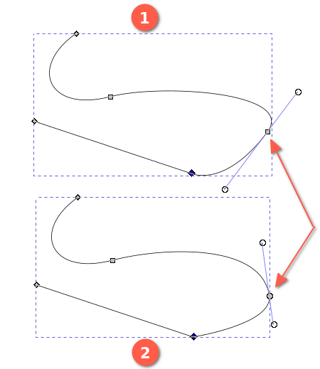
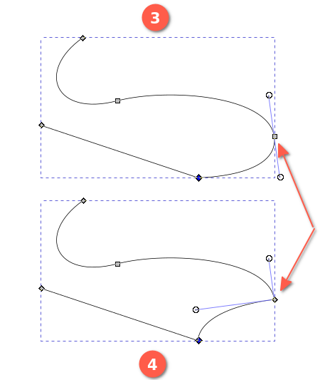
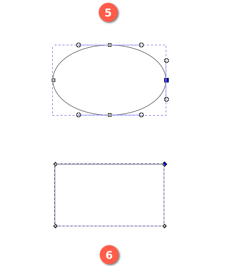
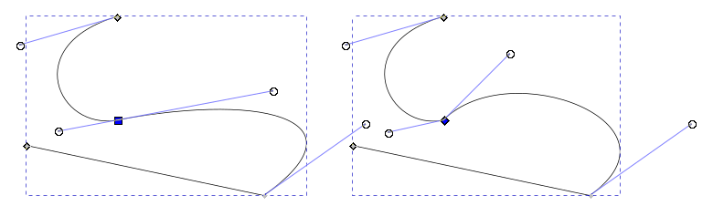
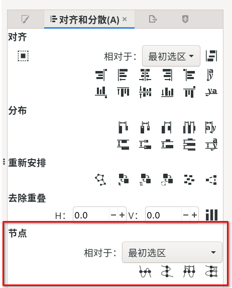

节点工具
快捷键：N 或者 F2
节点工具(  )可以用来编辑贝塞尔曲线上的节点。通过编辑节点，您可以对曲线进行细微控制和复杂调整，从而创建复杂而精确的路径。
)可以用来编辑贝塞尔曲线上的节点。通过编辑节点，您可以对曲线进行细微控制和复杂调整，从而创建复杂而精确的路径。
提示
驿窗注：节点工具(
)是非常专业的路径编辑工具，绝大多数与图形图像有关的软件都会有节点工具。所以，如果您希望成为行业内的专业人员，请熟练掌握节点工具。
操作方法
切换到节点工具；
点击路径以选中该路径；
点击该路径上的某个节点以选中该节点；
此时可以对节点进行编辑，比如移动节点位置，调整节点的手柄等；
移动节点：点击并拖动节点即可；
调整手柄：点击节点以显示手柄，然后点击并拖动手柄上的圆点即可；(重点是调整手柄的方向和长度)
删除节点：选中节点后按Del键或者Backspae键即可；
添加节点：在目标位置双击鼠标即可；目标位置必须在曲线上；
删除手柄：点击节点以显示手柄，然后按住Ctrl键不松手，再点击手柄端部的小圆点即可。
添加手柄：如果某个节点只有一个手柄或者没有手柄，想添加一个手柄，可以先按住Shift键不松手，然后在节点上点击并拖动一段距离，然后松开鼠标和Shift键即可。
节点工具也可以直接点击并拖动相邻两个节点之间的线段，从而改变曲线形状。
按空格键可以临时切换到选择工具(
 )，再按空格键则切换回节点工具。
)，再按空格键则切换回节点工具。
关于节点
节点是构成贝塞尔曲线的重要组成部分。节点的手柄可以对节点进行细微而精确的调整。
  {kind=link}
{kind=link}
{kind=link}
图 -1：贝塞尔曲线的构成 (点击查看大图 )
另外，如果节点位于开放路径的起点或终点，那么，起点节点和终点节点也称为端点。端点一定是尖角节点。
节点操作
使用节点工具(
)可以选中单个节点或多个节点，并可以对节点进行编辑。上面图-1中，1号、2号、3号、4号这四条曲线基本相同，都是五个节点+四条线段，且箭头所指的节点都显示了两个手柄；这4条曲线仅箭头位置的节点类型有所不同，这个不同导致曲线形状产生差异。
1号曲线箭头位置的节点是一个小正方形，节点本身及两个手柄三者都在一条直线上。小正方形，且节点本身及手柄都在一条直线上，这表示该节点的类型为平滑节点。
平滑节点的特点是：节点与两个手柄三者共同所在的直线与曲线在节点处正好相切。
1号曲线箭头位置节点的左上方向还有一个同类型平滑节点(小正方形)。
1号曲线最上方有一个菱形节点，下方直线段也有两个菱形节点；菱形节点表示该节点类型是尖角节点(非平滑节点)。
尖角节点的意思是指，节点两侧的曲线，在节点处的切线并不在同一条直线上；或者，只有一条手柄或没有手柄的节点，也叫尖角节点。
尖角节点会导致曲线看起来不平滑，显得有些突兀。
上面图-1中，4号曲线一共有五个节点，其中只有一个节点是平滑节点(正方形)，另外四个节点都是尖角节点(菱形)。
尖角节点没有手柄时，表示所控制的线段是直线段，不是弯线。(节点两侧可以有两个手柄分别控制)
上面图-1中，2号曲线被箭头指向的节点是一个小圆形；圆形表示该节点类型是一个自动平滑节点。
自动平滑节点也是平滑节点，二者的区别是：平滑节点或其相邻的节点被移动位置时，该平滑节点的手柄不会有任何变化，手柄的长度和方向保持原样；而自动平滑节点或其相邻的节点被移动位置时，该自动平滑节点的手柄会相应地自动发生变化(长度和方向)，以使路径保持整体平滑。
上面图-1中，3号曲线被箭头指向的节点是一个小正方形，正方形表示是平滑节点；另外，该节点的两个手柄的长度是相等的；平滑节点，且两侧手柄长度相同，这表示该节点类型是对称节点。
对称节点一定是平滑节点；对称节点用语言描述就是：两侧手柄长度相同的平滑节点。
在调整对称节点的手柄的长度时，当一侧手柄长度发生变化时，另一侧手柄的长度会同时自动发生变化，以保持两侧手柄的长度始终相同。
对称节点的一个重要意义是，节点两侧的曲线会接近对称或完全对称(需要与其相邻节点配合)；如果希望创建对称形状(弯线，非直线)，那么应该使用对称节点。例如，上面编号为5的椭圆形总共有四个节点，全是对称节点，这导致椭圆形上下对称，左右也对称。
6号图形是矩形，虽然上下左右也对称，但因为都是直线段，所以四个角都是尖角节点。
对称形状如果使用直线段，那么不能使用对称节点，应该使用尖角节点。
5号椭圆形的四个节点中，最右侧的节点是深蓝色，其它三个节点是浅灰色；深蓝色表示被选中，浅灰色表示未选中。其它几个图形同理。
对于选中的节点，按键盘上的方向键时，节点位置会被移动，未选中的节点则不会移动位置。
1号、2号、3号、4号这四条曲没有完全封闭，所以称为开放路径；右侧的5号椭圆形和6号矩形都是完全封闭的，所以称为封闭路径。
开放路径有两个端点，相当于路径的起始点和结束点。端点只有一侧有线段，另一侧没有。端点也是节点。
封闭路径没有端点，因为所有节点的两侧都有线段。
四种节点类型是可以相互转换的，方法如下：
按住Ctrl键不松手然后单击节点，会修改节点的类型；连续点击节点会使节点类型在平滑节点、自动平滑节点、对称节点、尖角节点四者之间循环切换。
提示
鼠标切换到节点工具(
或者，也可以按下面的方法转换节点类型：
图 -2：平滑节点 (左图深蓝色小方块 )被改为尖角节点 (右图深蓝色小菱形 )，且其一个手柄的长度和方向做了调整，导致曲线不平滑
{kind=link}
{kind=link}
{kind=link}
{kind=link}
可以使用菜单 对象→对齐与分布 来对节点进行对齐操作，如下面图-3所示：(此功能仅在切换到节点工具时才会显示)
图 -3：节点对齐与分布
节点手柄
节点手柄并不是曲线本身的一部分，而是用来辅助绘制曲线的工具。对于一段路径，当输出的时候，比如把路径打印到纸上，只会打印曲线本身，并不会打印节点的手柄。
上面图-2中，左侧曲线一共显示了四个小圆点，圆点与节点有直线连接。圆点及圆点与节点连接的直线称为节点手柄。
每一个平滑节点都有两个手柄。
尖角节点可能有两个手柄，也可能只有一个，或者一个也没有。
提示
用节点工具(
)选中一条路径，然后点击某个节点，即可对该节点进行编辑和调整。用节点工具(
)点击并拖动手柄端部的小圆点，可以调整节点两侧曲线的形状。调整要素是修改手柄的长度和手柄的方向。如果想在一个没有手柄的节点上添加手柄，可以先按住Shift键不松手，然后在节点上点击并拖动一段距离，然后松开鼠标和Shift键即可。
上面的操作会为节点添加一侧手柄，如果想添加另一侧手柄，重复上述操作即可。
如果想删除某一个手柄，可以先用节点工具(
)选中该节点，此时会显示手柄，然后按住Ctrl键不松手，再点击目标手柄端部的圆点即可。旋转手柄快捷键：
提示
首先，单侧手柄旋转只对尖角节点有效；另三种节点无效，双侧手柄会同时旋转。
其次，Linux系统如果想调整单侧手柄，可能需要先以 框选 的方式来选中目标节点，然后再对手柄进行操作。(鼠标点击的方式选择节点可能会导致双侧手柄同时旋转)
[ ：以15°步进逆时针旋转选中节点的双侧手柄。
] ：以15°步进顺时针旋转选中节点的双侧手柄。
左Ctrl+[ ：以15°步进逆时针旋转选中节点的左侧手柄。
左Ctrl+] ：以15°步进顺时针旋转选中节点的左侧手柄。
右Ctrl+[ ：以15°步进逆时针旋转选中节点的右侧手柄。
右Ctrl+] ：以15°步进顺时针旋转选中节点的右侧手柄。
左Alt+[ ：逆时针旋转选中节点的左侧手柄，步进为一个屏幕像素。
左Alt+] ：顺时针旋转选中节点的左侧手柄，步进为一个屏幕像素。
右Alt+[ ：逆时针旋转选中节点的右侧手柄，步进为一个屏幕像素。
右Alt+] ：顺时针旋转选中节点的右侧手柄，步进为一个屏幕像素。
调整手柄长度快捷键：
提示
首先，单侧手柄长度调整对四种类型的节点都有效，可能会导致节点类型发生改变，例如对称节点调整单侧手柄长度后变为平滑节点，两侧手柄不再等长。
其次，Linux系统如果想调整单侧手柄，可能需要先以 框选 的方式来选中目标节点，然后再对手柄进行操作。(鼠标点击的方式选择节点可能会导致双侧手柄的长度同时变化)
< ：延长 双侧手柄的长度，步进为首选项中设定的步进值。
> ：缩短 双侧手柄的长度，步进为首选项中设定的步进值。
左Ctrl+< ：缩短 左侧手柄的长度，步进为首选项中设定的步进值。
左Ctrl+> ：延长 左侧手柄的长度，步进为首选项中设定的步进值。
右Ctrl+< ：缩短 右侧手柄的长度，步进为首选项中设定的步进值。
右Ctrl+> ：延长 右侧手柄的长度，步进为首选项中设定的步进值。
左Alt+< ：缩短 左侧手柄的长度，步进为1个屏幕像素。
左Alt+> ：延长 左侧手柄的长度，步进为1个屏幕像素。
右Alt+< ：缩短 右侧手柄的长度，步进为1个屏幕像素。
右Alt+> ：延长 右侧手柄的长度，步进为1个屏幕像素。
提示
Inkscape的首选项中有关于步进的设置(编辑→首选项→行为→步进)，其中规定了 < 和 < 这两个键的默认步进值为2，单位是px。这里的px不是屏幕像素，而是SVG像素。
辅助快捷键
移动节点：使用键盘上的方向键可以移动最后创建的节点的位置。Shift+方向键会按10倍步进移动，Alt+方向键会按一个像素步进移动。
鼠标连续创建节点时，按Ctrl键可以限制新节点相对前一节点的角度步进为15°的整数倍。
上面Ctrl键对节点产生的15°步进限制，用鼠标移动节点的手柄时同样有效。
按Ctrl键再用节点工具(
)单击某个手柄，会删除该手柄。按Ctrl键再移动某个手柄，会限制手柄仅改变长度，不改变方向。
按Alt键再移动某个手柄，会限制手柄的长度保持不变，仅改变方向。
按Ctrl键再移动某个节点，可以限制节点只能水平移动或垂直移动。
工具选项
(
 )：插入节点。在选中的线段上插入一个新节点。如果同时选中多个线段，会在每一个线段上都插入一个新节点。
)：插入节点。在选中的线段上插入一个新节点。如果同时选中多个线段，会在每一个线段上都插入一个新节点。-
在X坐标最大处插入节点
在X坐标最小处插入节点
在Y坐标最大处插入节点
在Y坐标最大处插入节点
{kind=link}
( X: )：x坐标：选中节点的x坐标，可以精确调整节点的横向位置。
( Y: )：y坐标：选中节点的y坐标，可以精确调整节点的纵向位置。
提示
驿窗注：请参考选择工具中inkscape坐标系的特别之处(
 )：显示蒙版：显示选中对象的蒙版。
)：显示蒙版：显示选中对象的蒙版。( )：显示节点手柄：显示节点的手柄。如果突然发现被选中的平滑节点 不显示任何手柄，那么最好看一下这一项是否是未激活状态。
( )：显示路径轮廓(无LPE)：显示路径的轮廓线，去除LPE效果。当LPE效果比较复杂时，可以用这个选项来查看原始路径。
{kind=link}
{kind=link}
{kind=link}
{kind=link}
{kind=link}
{kind=link}
{kind=link}
{kind=link}
{kind=link}
{kind=link}
{kind=link}
{kind=link}
{kind=link}
{kind=link}